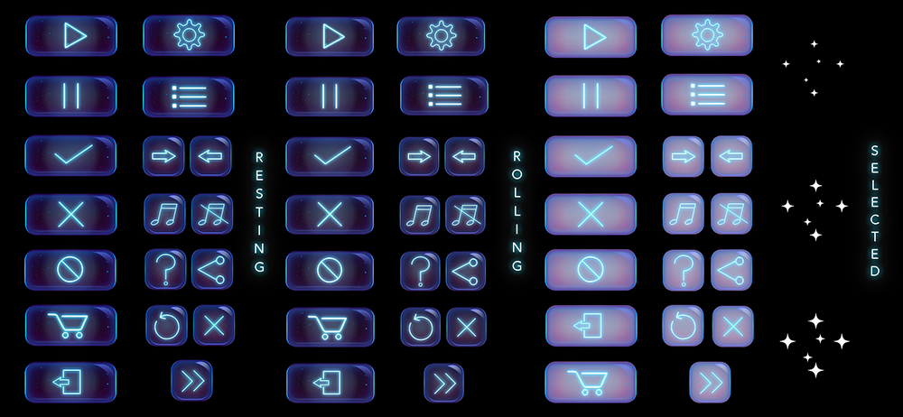

User Interface | Dreamy & Galactic Buttons
For this project, I went with a galactic theme for an user interface design. The interface buttons are intended for mobile app usage. Resting, Roll-over, and Selected states were considered along with some animation effects.

Sketches
Final Design
Although the sketcheds I created fit well my galactic theme, I realized that they may be too intricate for a user to see on a small device like a mobile. Therefore, I had symplify my design a lot. I kept with a simialr color palette, but I removed a lot of the many details.

All Buttons: Resting, Rollover, Selected
Animated Demo